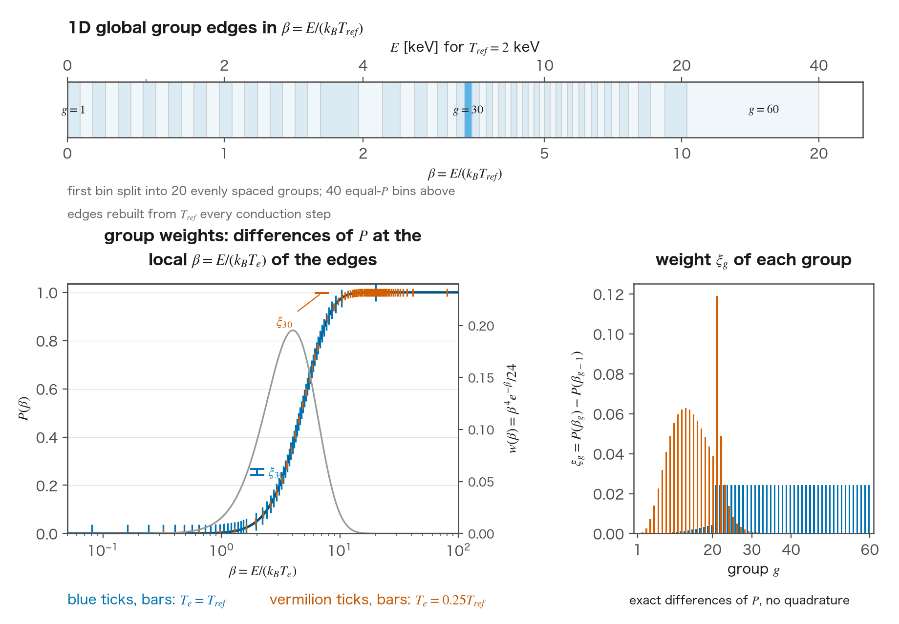
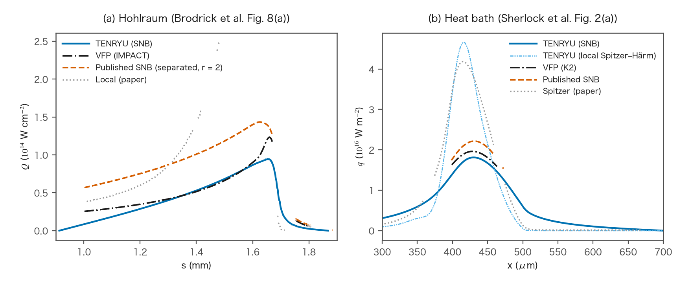
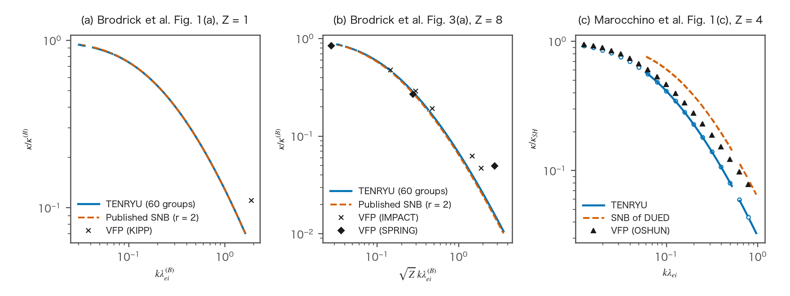

SNB nonlocal model
The SNB (Schurtz–Nicolaï–Busquet) model is a reduced kinetic model that computes the nonlocal correction of electron heat conduction in electron-energy groups (multigroup). It is enabled explicitly with nonlocal_model="snb" in 1D planar, cylindrical, and spherical geometry. The correction is added to the local SH flux. In 1D, no flux or conductivity limiter is applied. In time it is coupled by the implicit-SNB (iSNB) Picard iteration of Cao et al. This page describes the group structure, the transport-field equation, the mean free paths, and the correction procedure.
Terms used in this calculation
SNB uses several words in the sense of TENRYU's implementation: the group, the group weight, the transport field, the group mean free path, the nonlocal correction, and the iSNB Picard iteration. They are defined together here.
Quantities of SNB
A group is an interval of electron energy \(E\). SNB solves the nonlocal transport for each energy group. In 1D, the edges use β=E/(kBTref), where Tref is the largest electron temperature Tn at the start of the conduction step over the cells where conduction is solved (the cells excluded from it are listed in the SNB section). The group count G is snb_n_groups (default 60), and the cold-group count Gc is snb_n_cold_groups (default 20). The cumulative distribution P, defined below, is divided into Nw=G−Gc+1 equal shares up to βmax=snb_E_max_over_Te (default 20). The first bin [0, β1] is split into Gc groups evenly spaced in β. The edges multiplied by kBTref give the physical energies Eg, held for the step. The representative energy of a group is \(\varepsilon_g=(E_{g-1}+E_g)/2\).
The group weight \(\xi_g\) is the fraction of the local SH flux that the electrons of group \(g\) carry (the group edges and weights are plotted in Figure A). The SH flux has the weight \(\beta^4e^{-\beta}/24\) (\(\beta=E/(k_BT_e)\)) in energy, so \(\xi_g=P(\beta_g)-P(\beta_{g-1})\), with \(P(\beta)=1-e^{-\beta}(\beta^4+4\beta^3+12\beta^2+24\beta+24)/24\), a difference of an analytic cumulative distribution (no numerical quadrature is used). Here \(\beta_g=E_g/(k_BT_e)\) is the group edge \(E_g\) normalized by the local temperature at which the weight is evaluated (the mean of the two cells of a face in 1D). For the same \(E_g\), the lower that temperature, the larger \(\beta_g\), and the weight concentrates in groups of lower energy. It is a different quantity from the Z-dependent correction \(\xi(Z)\) of the mean free paths.
The transport field \(H_g\) is the field of the heat flux that the electrons of group \(g\) carry nonlocally (dimensionally a heat flux). It is obtained, for each group, by solving a diffusion-type equation (SNB section) whose source is the group's share of the local SH flux, \(U_g=\xi_gq_{SH}\). \(H_g\) is the distribution that results when the source spreads to its surroundings over the scale of the group's mean free path.
The group mean free paths \(\lambda_g^{abs}\) and \(\lambda_g^{tr}\) are the two lengths in the equation for \(H_g\). \(\lambda_g^{abs}\) (the superscript abs stands for absorption) sets, through the term \(H_g/\lambda_g^{abs}\), the distance over which \(H_g\) decays away from the source. \(\lambda_g^{tr}\) (tr stands for transport) sets, through the coefficient \(\lambda_g^{tr}/3\) of the diffusion term, how fast \(H_g\) spreads. In 1D, these lengths are separated as defined in the SNB section; snb_mfp is not used. The option snb_efield="local", which would shorten only the transport side, is rejected in 1D.
The nonlocal correction \(\delta q\) is the correction of the heat flux built from the gradients of \(H_g\), \(\delta q=-\sum_g(\lambda_g^{tr}/3)\nabla H_g\). The sum \(q_{raw}=q_{SH}+\delta q\) is the flux in 1D, which applies no limiter. At points of steep gradient \(\delta q\) reduces the SH flux (flux inhibition), and ahead of them it carries heat (preheat).
The iSNB (implicit-SNB) Picard iteration is the iteration that couples the nonlocal correction in time (the method of Cao et al.). In 1D, it couples the group solves to the implicit conduction step, as described in the SNB section.
SNB multigroup nonlocal model
nonlocal_model="snb" adds the opt-in Schurtz–Nicolaï–Busquet correction to electron conduction in 1D planar, cylindrical, or spherical geometry. The tridiagonal discretization below is the 1D one. In 1D, each conduction step uses the group layout defined above. When the weights \(\xi_g\) are evaluated, the edges are reread in the local-temperature \(\beta_g=E_g/(k_BT_e)\) to evaluate \(P\). In 1D, faces use the face-averaged \(T_e\). Each group then solves the following diffusion-type equation for its transport field \(H_g\) (dimensionally a heat flux). The source on the right-hand side is the divergence of \(U_g\), the group's share of the local SH flux; \(H_g\) is that injected source spread out over the scale of the mean free path, and its gradient rebuilds the nonlocal correction defined below:
Here \(P(\beta)\) is the cumulative distribution of the Spitzer–Härm heat flux over normalized electron energy — the flux carries a \(\beta^4e^{-\beta}/24\) spectral weight, and \(P\) is its running integral — so the weight ξg is an exact difference of the antiderivative, not a numerical quadrature. The total correction is \(\delta q=-\sum_g(\lambda_g^{tr}/3)\nabla H_g\). In 1D, the cell-centered finite-volume equation for Hg, integrated over the cell volume, is a strictly diagonally dominant tridiagonal system, and the group equations are solved by forward elimination and backward substitution that directly recover the correction power at each face. The row sums and off-diagonal weights are stored separately to retain the absorption term when it is small compared with diffusion. The face diffusivity is the harmonic mean of the neighboring λtr values divided by three, and closed boundaries impose a reflecting condition.

In 1D, the absorption and transport mean free paths are separated:
$$ \begin{aligned} \lambda_T&=\frac{(k_BT_e)^2}{4\pi n_e e^4\ln\Lambda},& \lambda_{ei,g}&=\frac{4\lambda_T}{Z^*}\left(\frac{\varepsilon_g}{k_BT_e}\right)^2,\\ \lambda_g^{abs}&=2\lambda_T\left(\frac{\varepsilon_g}{k_BT_e}\right)^2,& \lambda_g^{tr}&=\xi(Z^*)\lambda_{ei,g},\\ \xi(Z)&=\frac{Z+0.24}{Z+4.2}. \end{aligned} $$Here λT is the thermal length scale defined above, λei,g is the electron–ion mean free path, εg is the midpoint energy of the group, ne is the electron number density, e is the elementary charge, and ln Λ is the Coulomb logarithm. The collision charge Z*=〈Z²〉/〈Z〉 is averaged over the cell’s ion species and is shared with the SH conductivity. This is the separated mean-free-path form with r=2; snb_mfp is rejected when explicitly set. The electric-field option must be none.
The representative energy \(\varepsilon_g=(E_{g-1}+E_g)/2\) is evaluated in erg.
In 1D, snb_efield must be "none"; "local", the electric-field correction of the transport mean free path of Schurtz et al., is rejected. In 1D, the separated r=2 form was fixed on tests without an electric field.
The SNB correction, step by step
In 1D, the implicit conduction step freezes the conductivity, mean free paths, group energies, weights, and Tref at Tn. Each iteration solves the conduction tridiagonal system with the previous nonlocal correction in its right-hand side, starting with zero correction. From the updated temperature, each group solve obtains the face correction power directly by forward elimination and backward substitution; the powers are summed in group order. Voids and cells with nonpositive electron volumetric heat capacity ρCv,e or electron density ne are excluded. End faces and faces next to excluded cells reflect. Excluded cells have Hg=0.
$$ \begin{aligned} |D_i^k-D_i^{k-1}|&\le\alpha M_iT_i^k/\Delta t,\\ D_i^k&=P_{sh,R}(T^k)-P_{sh,L}(T^k),\quad M_i=(\rho C_{v,e})_iV_i,\\ r_k&=\max_i\frac{|D_i^k-D_i^{k-1}|\Delta t}{M_iT_i^k}. \end{aligned} $$Here k is the iteration number, i is a non-excluded cell, Psh,R and Psh,L are its right and left SH face powers, Mi is its electron heat capacity, Vi is its volume, Tik is its updated temperature, and Δt is the conduction interval. Starting at k=2, convergence requires this inequality in every non-excluded cell, with α=snb_iter_alpha (default 0.01). The cap snb_iter_max is 21 by default, at least 3. At the cap, an unconverged iterate is accepted only if rk is smaller than rk−1; the step is recorded as unconverged. Otherwise, or if the temperature is non-finite, the run stops with diagnostics. A non-positive or non-finite Tik in a non-excluded cell fails the convergence test and sets rk = +∞, so such an iterate is never accepted. No SNB time-step limit or flux limiter is applied.
In 1D, SNB applies no flux or conductivity limiter; an explicit f_lim is rejected. The GUI (Studio) builds SNB forms in 1D only; with SNB it hides f_lim and does not write it.
Namelist controls
These are the keys of the nonlocal model under Numerics.conduction. See the namelist reference for all keys and their validation rules. The defaults in the table are the values used when the deck does not set the key. For nonlocal_model="snb" in 1D, the input check requires 1D_SPH and solver="implicit". The common requirements are a two-temperature model, conduction.enabled=True, and the per-material conservation mode off.
| Key | Default in 1D | Purpose |
|---|---|---|
nonlocal_model | "none" | "none" or "snb" in 1D. Studio writes only the 1D case. |
snb_n_groups | 60 | Number G of SNB energy groups, at least 2; in 1D, G must exceed Gc. |
snb_E_max_over_Te | 20 | Upper normalized energy, larger than 1. In 1D, equal-P bins have their first bin subdivided. |
snb_efield | "none" | In 1D, "none" is required; "local" is rejected. |
snb_n_cold_groups | 20 | 1D cold-group count Gc, from 1 to G−1. |
snb_iter_max | 21 | 1D implicit-conduction iteration cap, at least 3. |
snb_iter_alpha | 0.01 | 1D cellwise convergence tolerance α, positive. |
Verification
The 1D tests compare the model with closed forms and with the published results of Brodrick et al. 2017 [6], Sherlock et al. 2017 [3], and Marocchino et al. 2013 [5]; the values below are those of the verification run of 2026-11-09.
- Linear response (
snb1d_planar_response): for a small sinusoidal perturbation of the electron temperature, the ratio R of the SNB heat flux to the local Spitzer–Härm flux is compared with the closed-form response Rh of the model with its 60 energy groups. The 846 cases cover ion charges Z = 1 and Z = 8 and a mixture of mean charge Z̄ = 4, with kλei from 1e-3 to 1.627, where k is the perturbation wavenumber and λei is the electron–ion mean free path as Brodrick et al. [6] define it in their Eq. 2. The largest |R − Rh| is 2.73e-7 against the tolerance 1e-5. With the cell values reversed on the same mesh, the response R′ is the same and the correction changes sign; the largest |R′ − Rh| is 2.73e-7. - Curvilinear and graded meshes (
snb1d_curvilinear_order): 24 cases cover planar, cylindrical, and spherical geometry on uniform and graded meshes. The error against the closed form decreases as the square of the cell size: the observed orders range from 1.967 to 2.002, against a required minimum of 1.8. - Energy groups (
snb1d_group_convergence): the 60-group response Rh,G is compared with the continuum response R∞, computed by adaptive quadrature, at the 834 points of Brodrick et al.’s Fig. 1 [6]. The largest |Rh,G/R∞ − 1| is 6.64e-3, at most 0.901 of each point’s tolerance, which is the published curve’s relative digitization uncertainty. The coefficient bo of the response’s small-wavenumber expansion is evaluated as bo = ∫060 (16ξβ4/(27π)) dP, where β is electron energy divided by the reference temperature in energy units, P is the cumulative source spectrum, and ξ is the charge-dependent correction. It equals the paper’s closed form, with relative differences of 0 at Z = 1 and 4.4e-16 at Z = 8. Table II [6] prints this coefficient as 633.8ξ/r, where r is the mean-free-path factor (r = 2 here). The computed coefficient agrees with it to the four printed digits. Evaluated at Z = 1 and Z = 8, the printed form gives 75.5685 and 214.0374, against the computed 75.5673 and 214.0341. - Published SNB and VFP curves (
snb1d_brodrick_fig1): at the 834 used points of the SNB curve of Brodrick et al.’s Fig. 1(a) [6] (Z = 1), the largest deviation is 0.501 for R∞ and 0.930 for 60 groups, in units of the curve’s digitization uncertainty, which is the tolerance. With the mean-free-path factor r = 3 in place of 2, the comparison fails at all 420 points where it must. The Z = 8 curve of Fig. 3(a) [6] and the deviations from the VFP (Vlasov–Fokker–Planck) curves are recorded without a pass or fail judgment. At Fig. 3(a), the largest deviation is 2.79 for R∞ and 2.82 for 60 groups, in units of digitization uncertainty. (comparison with VFP) - Hohlraum profile (
snb1d_brodrick_hohlraum): the heat flux on the hohlraum profile of Brodrick et al. [6] is compared with the VFP code IMPACT. The relative peak deviation from IMPACT, d = 0.2327, must not exceed the published SNB result’s own relative deviation dpub = 0.1628 plus the reading and input uncertainties; the resulting bound is 0.6283. The peak flux is 9.466e20 erg s−1 cm−2, compared with 1.2337e21 erg s−1 cm−2 for IMPACT and 1.4345e21 erg s−1 cm−2 for the published SNB result. (comparison with VFP) - Heat bath (
snb1d_sherlock_heat_bath): the peak flux qpeak of the heat-bath problem of Sherlock et al. [3] is compared with the VFP code K2. It is 1.8127e19 erg s−1 cm−2, compared with 1.9619e19 erg s−1 cm−2 for K2 and 2.2155e19 erg s−1 cm−2 for the published SNB result. The relative peak deviation from K2, d = 0.0760, is within the bound 0.1567 formed from the published SNB result’s own deviation and the reading uncertainties in the same way. (comparison with VFP) - Iteration (
snb1d_iteration_decay): the measured decay of a temperature mode per step agrees with the closed-form amplification of the iterated implicit step. The largest relative difference is 5.7e-8 against the bound 1e-5. - Records of Marocchino et al. 2013 (
snb1d_marocchino_fig1_record,snb1d_marocchino_fig3_record): the linear response’s deviations from the published curves of Marocchino et al.’s Fig. 1(c) [5] (Z = 4) are recorded; for the hot-spot problem, the temperature and heat flux are recorded beside the paper’s statements, with no published curve compared; neither record has a pass or fail judgment. (comparison with VFP) - Conservation, reproducibility, and an integrated replay: every direct call of the conduction step in
snb1d_iteration_decay,snb1d_sherlock_heat_bath, andsnb1d_marocchino_fig3_recordcloses the energy within the arithmetic bound. The scripttests/coupling/snb1d/run_checks.shchecks that repeated runs, a restart, and runs on 1, 2, and 4 MPI ranks are bitwise identical and performs the integrated replay. One step of SNB from a late checkpoint of the 12 ns spherical implosion deckexamples/implosion/gxii_square_240J_12ns_fld_nr450.py(450 cells) is accepted after 2 iterations. - Unit tests of the invariants: all tests passed for exact zero correction at uniform temperature, the source spectrum and the group solve against references in at least 1024-bit arithmetic, the same results with fused multiply-add contraction disabled, the stop rules, small meshes, and the rejection of the mean-free-path limiter in 1D.
Comparison with VFP
A VFP (Vlasov–Fokker–Planck) code directly solves the kinetic equation of the electron distribution function (Brodrick et al. [6], p. 3). SNB approximates the nonlocal heat flux without solving the distribution function. Brodrick et al. [6], Sherlock et al. [3], and Marocchino et al. [5] verified SNB against VFP codes. TENRYU's 1D SNB is compared on the same problems with the same VFP results. The VFP results are not recomputed: curves and points are digitized from the papers' figures. Each digitized value has a reading uncertainty due to line width and drawing resolution. The VFP codes are IMPACT, KIPP, and SPRING in Brodrick et al., K2 in Sherlock et al., and OSHUN in Marocchino et al.
The hohlraum problem follows Brodrick et al. [6], pp. 11–12, Figs. 7(a) and 8(a). Brodrick et al. computed a laser-heated gadolinium hohlraum with a helium gas fill in 1D spherical geometry with HYDRA. They used the profiles of electron temperature Te, electron number density ne, and charge Z at 20 ns as the initial conditions of an IMPACT run in planar geometry. Across about 100 μm at the helium–gadolinium interface, the plasma changes from Te = 2.5 keV, ne = 5e20 cm−3, and Z = 2 to Te = 0.3 keV, ne = 5e21 cm−3, and Z = 39. The Coulomb logarithm ln Λ is fixed at 2.1484. Their Fig. 8(a) compares SNB heat fluxes computed on the Te profile after 5 ps of the IMPACT run with IMPACT's flux. TENRYU takes the digitized lines of Fig. 7(a): that Te and ne and Z, which do not change in IMPACT. It puts them on 956 equal cells of width 0.999 μm over s = 0.912–1.868 mm, the range where all three lines are drawn. Here s is the figure's position coordinate. With planar geometry, reflecting ends, and ln Λ = 2.1484, TENRYU evaluates the SNB flux once on that state, without a time advance.
The heat-bath problem follows Sherlock et al. [3], p. 3, Fig. 2(a). The initial temperature is T = 1000 eV for x < 400 μm, followed by a linear ramp to 100 eV over 100 μm, in a box of length 700 μm. The fixed inputs are ne = 2.47e20 cm−3 (2.47e26 m−3), Z = 50, and ln Λ = 7.1; their Fig. 2(a) shows the heat flux at 10 ps. TENRYU uses 700 cells of width 1 μm and reflecting ends and evolves only the electron temperature by conduction. It includes no hydrodynamics, radiation, or electron–ion energy exchange; Sherlock et al. name none for this problem. TENRYU advances 540 equal time steps to 10 ps and then evaluates the SNB flux of that state.
The peak heat flux passes when the following inequality holds.
$$ \begin{aligned} d &\le d_{pub}+(1+d_{pub})\,(\delta_{SNB}+2\,\delta_{VFP}+\delta_{in}),\\ d &=\left|q_{peak}/q_{peak,VFP}-1\right|,\qquad d_{pub}=\left|q_{peak,pub}/q_{peak,VFP}-1\right|. \end{aligned} $$Here qpeak is TENRYU's peak heat flux, qpeak,VFP is the peak of the digitized VFP curve, and qpeak,pub is the peak of the published SNB curve. The quantities d and dpub are the relative peak deviations of TENRYU and the published SNB from VFP, respectively. The quantities δSNB and δVFP are the relative reading uncertainties of the published SNB and VFP curves at their peaks. The quantity δin estimates the relative change of TENRYU's peak caused by the reading uncertainty of the hohlraum's digitized input profiles Te, ne, and Z, using the first-order approximation and upper- and lower-band evaluations described below.
The rule follows the papers' own verification: each paper presents its SNB's peak deviation from VFP as agreement. Brodrick et al. report peak heat flow within 16 % ([6], p. 12). Sherlock et al. report reasonably good agreement for the characteristic reduction of the peak relative to Spitzer ([3], p. 3). TENRYU passes when its deviation from VFP does not exceed the published SNB's after the reading uncertainties are allowed for.
The term 2δVFP accounts for the VFP reading entering both d and dpub. The factor 1 + dpub accounts for relative reading errors multiplying a peak ratio whose size is about 1 + dpub.
The input uncertainty uses δin = max(δlin, δenv). The quantity δlin is a first-order bound on the relative peak change over input profiles that lie inside each line's reading band and satisfy constraints on reading-position quantization errors and changes between adjacent cells along continuous parts of the line. Local sensitivities are obtained from the rate of change of the flux when one cell's input value alone is perturbed slightly. The quantity δenv sums, over the three inputs, the larger change of the peak when that input is replaced by the upper or lower edge of its band. The heat-bath inputs are numbers printed in the paper's text, so δin = 0.
| Quantity | Hohlraum | Heat bath |
|---|---|---|
| VFP code | IMPACT | K2 |
| qpeak | 9.466e20 | 1.8127e19 |
| qpeak,VFP | 1.2337e21 | 1.9619e19 |
| qpeak,pub | 1.4345e21 | 2.2155e19 |
| d | 0.2327 | 0.0760 |
| dpub | 0.1628 | 0.1292 |
| δSNB | 4.15e-3 | 7.43e-3 |
| δVFP | 4.82e-3 | 8.44e-3 |
| δin | 0.3866 (δlin; δenv = 0.0950) | 0 |
| Bound (right side) | 0.6283 | 0.1567 |
| Verdict | pass | pass |
The hohlraum passes only through δin. Without δin, the bound is 0.179, which d = 0.2327 exceeds. The upper- and lower-edge changes contributing to δenv are 6.0e-3 and 4.5e-3 for Te, 3.16e-2 and 3.16e-2 for ne, and 5.75e-2 and 4.67e-2 for Z. Doubling the cells to 1912 changes the peak by 5.8e-4. Extending the domain to 1.883 mm, the end of the drawn ne line, with 971 cells and Te and Z held at their last drawn values changes the peak by 3.1e-4. Both changes are within δSNB/2 = 2.07e-3.

TENRYU's peak in Figure B lies below VFP's: 0.767 of IMPACT's and 0.924 of K2's. The published SNB's peak lies above VFP's, at 1.163 and 1.129, respectively. TENRYU's peak is 0.660 and 0.818 of the published SNB's.
The hohlraum regions are defined by TENRYU's test; Brodrick et al. do not define them. Here qIMPACT is IMPACT's heat flux and qpeak,IMPACT its peak. The gas fill consists of faces between cells with Z < 3 (helium has Z = 2) where qIMPACT ≥ 0.01 qpeak,IMPACT. The preheat consists of faces beyond IMPACT's peak on the gadolinium side, with larger Z, where 0.01 qpeak,IMPACT ≤ qIMPACT ≤ qpeak,IMPACT/2. Here q is the heat flux of each SNB model. The median q/qIMPACT in the gas fill is 0.954 for TENRYU and 2.074 for the published SNB; in the preheat it is 0.443 and 1.217. Brodrick et al. [6], p. 12, report that the gas-fill heat flow is still too large by a factor of about 2 and that the preheat prediction is very good.
The models have known differences, whose effect on these gaps has not been checked. Both papers' SNB corrects the mean free path for the electric field (Brodrick et al. [6], Eq. 19, p. 6; Sherlock et al. [3], pp. 7–8). TENRYU's 1D SNB omits this correction (snb_efield="none"). Sherlock et al.'s SNB uses a geometrically averaged mean free path ([3], p. 3). TENRYU separates the mean free paths, as does Brodrick et al.'s separated curve. Brodrick et al. [6], p. 12, note that the geometric average is valid only for homogeneous ionization.
In the heat bath, TENRYU's local Spitzer–Härm flux on its 10 ps state peaks at 4.663e16 W m−2 at 416 μm. The paper's Spitzer curve peaks near 4.2e16 W m−2. The paper does not state on which temperature profile its Spitzer curve is computed, so the two are not compared.
Linear response compared with VFP
The linear-response problem is a small sinusoidal perturbation of the electron temperature in a uniform plasma. The papers plot the effective conductivity divided by the local one. Brodrick et al. plot κ/κ(B) against kλ(B)ei, where κ(B) is Braginskii's dimensionless local thermal conductivity ([6], Eq. 1, p. 2). Marocchino et al. plot κ/κSH against kλei, where κSH is the Spitzer–Härm conductivity. TENRYU's response R, the ratio of the SNB flux to the local Spitzer–Härm flux defined in the verification list above, is compared with these ratios. The definitions of k and λei also follow that list; λ(B)ei is Brodrick et al.'s notation.

Brodrick et al. print the abscissa of Fig. 3(a) as kλ(B)ei ([6], p. 8). TENRYU reads that coordinate x as √Z kλ(B)ei and evaluates the response at kλ(B)ei = x/√8. With the printed reading, the continuum response R∞ lies 29–81 % below the published SNB curve. With the √Z kλ(B)ei reading, R∞ lies 0.6–5.8 % above it and the 60-group response Rh,G lies 0.15–5.8 % above it. The printed reading disagrees with the paper's own hydrodynamic-limit expansion (Eq. 23, with expansion coefficient b given by Table I's b(8) = 157). At x = 0.02763, the SPRING point is 0.846, while 1 − b x2 = 0.880 with the √Z reading and 1 − 8 b x2 = 0.041 with the printed reading. The paper defines no √Z-scaled abscissa, so Fig. 3(a) is recorded without a pass or fail judgment.
The largest deviations from the published SNB curve of Fig. 3(a), in units of its reading uncertainty, are 2.79 for R∞ and 2.82 for 60 groups; the medians are 1.92 and 1.96, respectively. Fig. 1(a) is the judged comparison, as shown in the list above. Its KIPP point lies at κ/κ(B) = 0.111, below 0.2, where SNB begins to depart from kinetic results (Brodrick et al. [6], p. 8), so its deviation is not recorded.
The following table shows the VFP points of Fig. 3(a) with κVFP/κ(B) ≥ 0.2, where κVFP is the VFP effective conductivity. The quantities R∞ and Rh,G are the continuum and 60-group responses defined in the list above, RVFP is the ratio at the VFP point, and Rpub is the published SNB curve at x.
| Code | x = √Z kλ(B)ei | |R∞ − RVFP| | |Rh,G − RVFP| | |Rpub − RVFP| |
|---|---|---|---|---|
| IMPACT | 0.1462 | 0.0101 | 0.0105 | 0.0211 |
| IMPACT | 0.2967 | 0.0228 | 0.0228 | 0.0313 |
| SPRING | 0.0276 | 0.0530 | 0.0478 | — |
| SPRING | 0.2767 | 0.0153 | 0.0154 | — |
A dash means that the digitized published curve has no value there: 0.0276 lies left of its first point, 0.0319, and 0.2767 lies in 0.265–0.296, where the curve overlaps a marker and was not digitized. At both IMPACT points, TENRYU is closer to IMPACT than the published SNB curve is.
Marocchino et al.'s Fig. 1(c) uses Z = 4, n = 1e23 cm−3, and reference temperature T0 = 307 eV ([5], pp. 4–5). The relative deviation of TENRYU's response from the curve value Rcurve, R/Rcurve − 1, has a median of −0.108 and a range of −0.445 to −0.028 at 19 OSHUN points. At 812 DUED-SNB points, its median is −0.408 and its range is −0.498 to −0.245. In reading-uncertainty units, the signed deviation of largest magnitude is −4.57 for OSHUN (median −1.14) and −16.8 for DUED-SNB (median −14.5). TENRYU lies below both curves. The cause of the difference from DUED's SNB has not been checked.
Results not compared
- Brodrick et al. [6], Fig. 5 (homogeneous density and ionization): the input profile is not published (p. 10).
- Marocchino et al. [5], Fig. 1(a) and (b) (Z = 1 and 2): the conversion from the figure's axes to values (calibration) failed its check, so these panels were not digitized for comparison.
- Marocchino et al. [5], Fig. 3 (hot spot): TENRYU records temperature T and heat flux q after 2 and 30 electron–ion collision times beside the paper's statements (p. 6), without a published curve. Rows 1–3 failed the calibration check, and row 4 holds electric fields, which TENRYU's 1D SNB omits.
References
- E. M. Epperlein and R. W. Short, "A Practical Nonlocal Model for Electron Heat Transport in Laser Plasmas," Phys. Fluids B 3, 3092–3098 (1991). doi:10.1063/1.859789
- G. P. Schurtz, Ph. D. Nicolaï, and M. Busquet, "A Nonlocal Electron Conduction Model for Multidimensional Radiation Hydrodynamics Codes," Phys. Plasmas 7, 4238–4249 (2000). doi:10.1063/1.1289512
- M. Sherlock, J. P. Brodrick, and C. P. Ridgers, "A Comparison of Non-Local Electron Transport Models for Laser-Plasmas Relevant to Inertial Confinement Fusion," Phys. Plasmas 24, 082706 (2017). doi:10.1063/1.4986095
- D. Cao, G. Moses, and J. Delettrez, "Improved Non-Local Electron Thermal Transport Model for Two-Dimensional Radiation Hydrodynamics Simulations," Phys. Plasmas 22, 082308 (2015). doi:10.1063/1.4928445
- A. Marocchino, M. Tzoufras, S. Atzeni, et al., "Comparison for Non-Local Hydrodynamic Thermal Conduction Models," Phys. Plasmas 20, 022702 (2013). doi:10.1063/1.4789878
- J. P. Brodrick, R. J. Kingham, M. M. Marinak, et al., "Testing Nonlocal Models of Electron Thermal Conduction for Magnetic and Inertial Confinement Fusion Applications," Phys. Plasmas 24, 092309 (2017). doi:10.1063/1.5001079